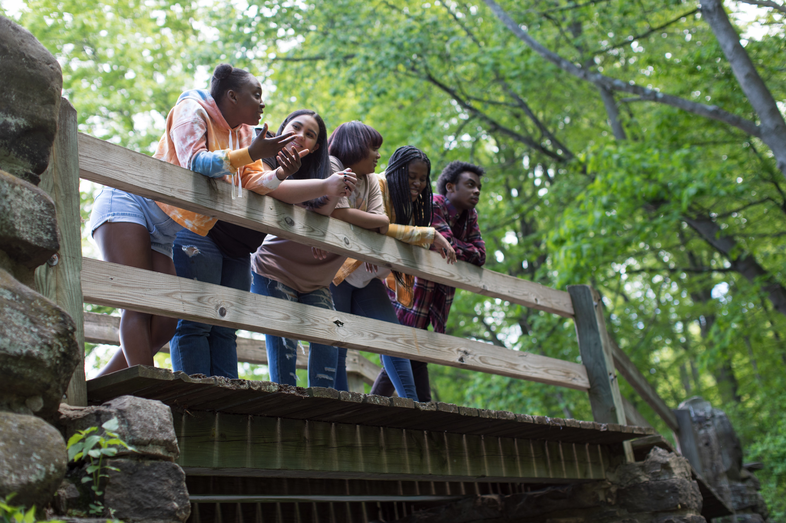
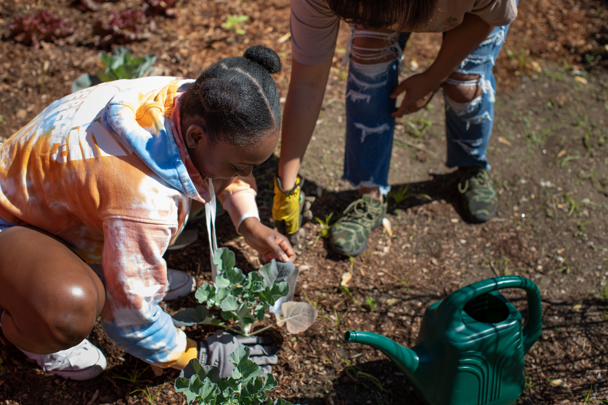
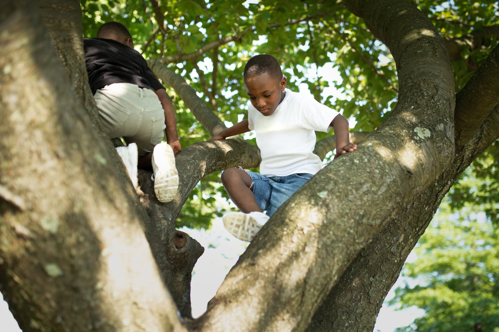
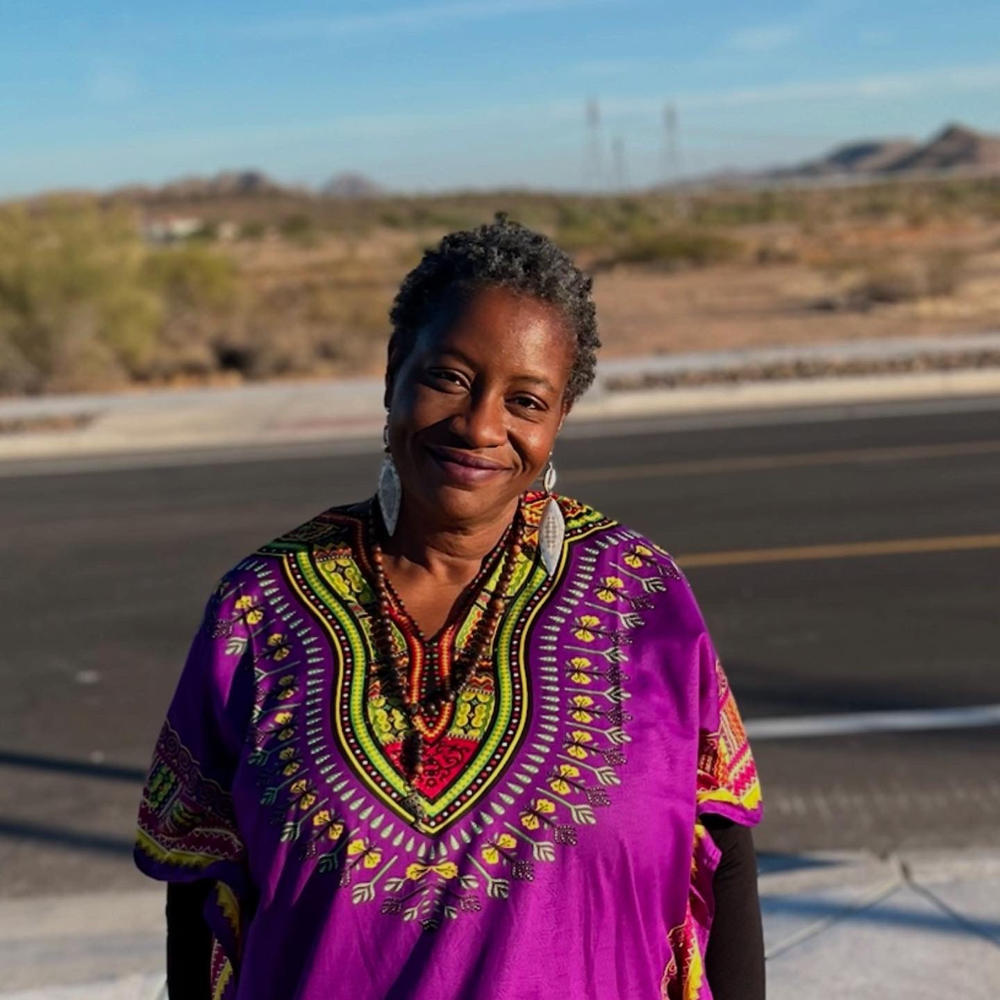

Who We Serve
The learner who is done with the default.
FLOE begins with the learner.
The one who knows something is not fitting.
The one who has been measured by systems that do not account for how they think, learn, or move through the world.


The Teen and the adults around them
Starting transition planning early, looking for a path that begins with self-determination.
The Young Adult navigating alone or with chosen family
School support and the IEP are gone. The structure is gone. The books stop helping. And most programs don't get it.
The Adult Rediscovering themselves after feeling lost
Looking for space to figure out what they want, with someone who won't impose a framework that doesn't fit.
Young Learners and their families
Wanting how their child learns to lead exploration.
Our Programs
Three pathways. No wrong entry point.
Every FLOE client enters the program that fits where they are.
WONDER
Rediscover · Reconnect · Reimagine
For learners who know something is not fitting but cannot fully name it yet.
"Before we go anywhere, let's remember who you are."
Learn More / Start a ConversationSOAR
Clarify · Build · Launch
For learners who already feel a direction but keep running into resistance.
"You know where you want to go. Let's build the runway."
Learn More / Start a ConversationSoar with Wonder
Explore · Play · Grow · Wonder
For young learners and their families who want curiosity to be the foundation.
"Before anything else, let them wonder."
Learn More / Start a ConversationHow It Works
A structure that adapts to the learner.
-
Discovery Conversation We map your whole ecosystem first.
-
Program Placement WONDER or SOAR, based on where you are and what you need.
-
Ongoing Conversations Sessions that go where the learner leads.
-
Quarterly Benchmarks Progress on your terms by measuring what matters to you.
-
Community & Mentor Network A cohort of 5–7 clients who grow together, plus a mentor network for ecosystem support.

Investment
Spend a full year
honoring your curiosity.
This is not something you enter. It is something you move through.
Cohort model: 5 to 7 clients per year. Community is built into the structure from day one.
Who You're Working With

Kristina Brooke Daniele
Founder, FLOE · Educator · Author · Advocate
Kristina Brooke Daniele has been a teacher, a student, a parent, and a self-advocate navigating systems that don't account for how her brain works.
She is the author of the Amazon bestselling "Civil Rights Then & Now" and holds a Masters of Science in Teaching from Fordham University. With 21 years spanning classroom teaching and curriculum design, she built FLOE because she lived the gap it fills.
She has seen what community and mentorship look like when they are done right. When the learner defines the goal. When the structure bends.
FLOE exists because we exist.
What We Believe
We know this because we live it.
You have been measured. Not understood.
Where It Begins
Not everything fits into what already exists.
Most people don’t come here looking for a program.
They come because something isn’t working, and they’re no longer interested in forcing it.
The conversation is where it begins.
If this feels familiar,
we can start there.
The first step is a conversation.
Not a commitment.